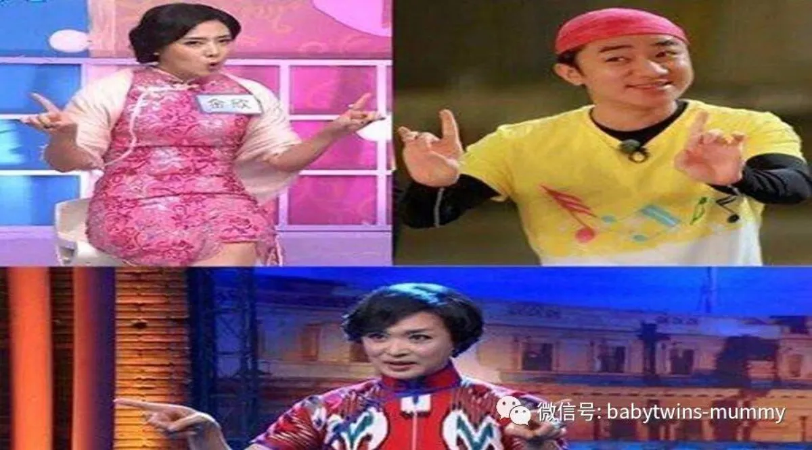
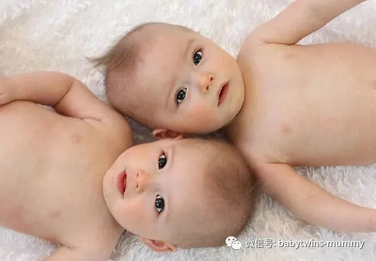
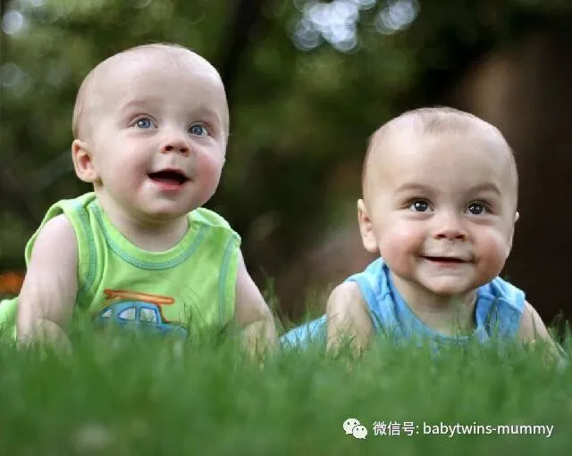
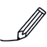
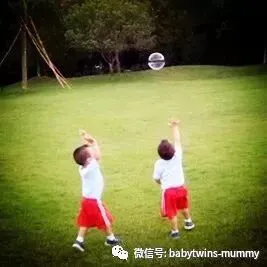

点击上方“孖仔帮”关注我们
双胞胎的外观和气质通常有相似之处，那要是标配相似的名字岂不是…完美！
文|圆圈妈 图片来自网络
许多双胞胎宝爸宝妈都希望孩子有一对寓意好又好听好记的名字。
甚至某些有超前意识，先进理念，开放思想的宝爸宝妈，
连英文名字也要准备地妥妥的，贴贴的！
还要求名字赋予某种含义，
比如美丽，漂亮，智慧，英俊，才能...
在此，圆圈妈搜罗了全世界各大育儿网站，
总结了100组双胞胎男孩的英文名字.
每一组名字都有中文翻译和特定的寓意，
请家长们各取所需，对号入座给孩子们找到满意的英文名字.
01
有相同寓意的英文名字
Asher and Felix – Fortunate
弗雷德里克和米洛 – “幸运”
Frederick and Milo – Peace
弗雷德里克和米洛 – “和平”
Orlando and Rodrigo – Famous
奥兰多和罗德里戈 – “闻名”
Cyrus and Samson – Sun
赛勒斯和山姆- “阳光”
Louis and Walter – Warrior
奥尔登和雷蒙娜 – “勇士”
Alden and Ramona – Wise
奥尔登和雷蒙娜 - 聪明
02
象征大自然，纯净的英文名字
Ariel – Lion of God, Atwood – Forest dweller
.阿里尔 - 上帝的狮子，阿特伍德 - 森林居民
Barclay – Meadow of birch trees, Benton – One who dwells in the moors
巴克莱 - 桦树草地，本顿 - 住在荒野里的人
Leon – Lion, Leonard – As brave as lion
莱昂 - 狮子，伦纳德 - 像狮子一样勇敢
Oliver – Olive tree, Orson – Like the bear
奥利弗 - 橄榄树，奥森 - 像熊一样
Walden – Woods, Wildon – From the wooded hill
瓦尔登-灌木丛 威尔登-来自大森林
03
象征崇高精神，美好心灵的英文名字
Aaron – Exalted, Abel – Breath
亚伦 - 崇高，亚伯 - 呼吸
Abe – Father of nations, Abraham – Exalted father
安倍 - 国际之父，亚伯拉罕 - 尊贵的父亲
Christian – Follower of Christ, Christopher – Christ-bearer
基督徒 - 基督的追随者，克里斯托弗 - 基督的持有者
John – God is gracious, Jonah – Dove
约翰 - 上帝很亲切，约拿 - 鸽子
Melchior – City of the King, Michael – Humble
.梅尔基奥尔 - 国王之城，迈克尔 - 谦逊
Noah – Comfort, Noel – Christmas
诺亚 - 舒适，诺埃尔 - 圣诞节
04
带有异域风情的梵文名字
Anuj – Younger brother, Tanuj – Rising Sun
阿奴 – 雏菊，泰奴– 旭日
Mridul – Soft, Mukul – Blossom
米日东– 柔软，木卡尔 – 繁荣
Hemal – Golden, Heman – Gold
哈玛尔– 金色, 河马 – 黄金
Lalith – Elegant, Lohith – Red,
拉里斯- 优雅，洛里斯 - 红色
Sanket – Signal, Sankalp – Determination
撒凯特–暗号 ，沙巴格– 意志
Tapan – Sun, Tapas – Heat
塔帕纳– 阳光，塔帕斯 – 热量
05
象征快乐的英文名字
Arnan – Joyful, Asher – Happiness
阿尔南 - 快乐，阿舍尔 - 幸福
Caio – Joy, Caius – Rejoice
才欧 – 乐事，凯斯 - 欢喜
Gale – Cheerful, Gaye – Merry
盖尔 - 快乐，盖伊 - 风流
Gil – Joy, Gilon – Joy
吉尔-乐趣- 吉隆-喜悦
Faine – Happy, Felix – Fortunate
范尼 - 快乐，菲力- 幸运
Oron – Joy, Osher – Happiness
奥伦 - 乔伊，奥谢 - 幸福
06
有相同音节的英文名字
Jackson – God has been gracious, Madison – Surname derived from Matthew ‘gift of God’
杰克逊 - 上帝一直亲切，麦迪逊 - 马太所赐的姓氏'上帝的恩赐'
Henry and Harry – both mean Estate ruler
亨利和哈利 - 都是庄园的统治者
Charlie – Freeman, Riley – Courageous
查理 - 弗里曼，莱利 - 勇敢
Ethan – Strong, Evan – The Lord is gracious
伊桑 - 强壮，埃文 - 主是仁慈的
Jordan – Flowing down, Justin – Righteous
乔丹 - 流下来，贾斯汀 - 正义
07
跟名人明星同名的英文名字
Bob – Bright fame, Max – Greatest (twin of actors Charlie Sheen and Brooke Mueller)
鲍勃 - 明亮的名声，马克斯 - 最伟大的（双胞胎演员查理辛和布鲁克穆勒）
Dexter – Right-handed, Frank – Free-man (twins of Ppianist/singer Diana Krall and musician Elvis Costello)
德克斯特 – 掌权人，弗兰克 - 自由人（Ppianist /歌手戴安娜克劳尔和音乐家埃尔维斯科斯特洛的双胞胎）
Hunter – One who hunts, Jake – Supplanter (sons of model Niki Taylor)
猎人 - 狩猎者，杰克 - 补给者（模特儿尼基泰勒的儿子）
Julian – Youthful, Aaron – Exalted (sons of actor Robert De Niro)
朱利安 - 青春，亚伦 - 崇拜（演员之子罗伯特德尼罗）
Henry – Estate ruler, Rufus – Red-haired (sons of singer James Taylor)
亨利 - 庄园统治者，鲁弗斯 - 红发（歌手詹姆斯泰勒的儿子）
Valentino – Strength, Matteo – Gift of God (sons of singer Ricky Martin)
华伦天奴 - 力量，马泰奥 - 上帝的礼物（歌手瑞奇马丁的儿子）
08
念起来押韵的英文名字
Daniel – God is my judge, Nathaniel – Gift of God
丹尼尔 - 上帝是我的法官，纳撒尼尔 - 上帝的恩赐
Aidan – Little fire, Caden – Spirit of battle
艾丹 - 小火，卡登 - 战斗的精神
Rhett – Ardent, Brett – A native of Brittany
瑞德 - 阿登特，布雷特 - 布列塔尼人
Jarrett – Spear strong, Barrett – Brave as a bear
贾雷特 - 强壮，巴雷特 - 勇敢如熊
Ian – Gift from God, Ryan – Little King
伊恩 - 来自上帝的礼物，瑞安 - 小国王
Graham – Gravelly homestead, Sam – Told by God
格雷厄姆 - 砾石般的家园，萨姆 - 由上帝指示
Preston – Priest’s estate, Weston – From the Western tower
普雷斯顿 - 牧师的庄园，威斯顿 - 来自西部的塔楼
Casper – Treasurer, Jasper – Keeper of treasure
卡斯帕 – 财富，贾斯珀 - 宝藏的守护者
Carmello – Fruitful orchard, Othello – Prosperous
卡梅罗 - 富有果树的果园，奥赛罗 - 繁荣
09
首字母相近的英文名字
Benjamin – Son of the right hand, Braxton – Brock’s settlement
本杰明 - 右手的儿子，布拉克斯顿 - 布罗克的定居点
Taylor – Tailor, Tyler – Maker of bricks
泰勒 – 裁缝 - 泰勒 - 泰勒制造商
Parker – Keeper of the forest, Porter – Gatekeeper
帕克 - 森林守护者，波特 - 看门人
Jayden – Jehovah has heard, Jaylen – Healer
杰登 - 耶和华听说过，杰伦 - 治愈者
Roman – Citizen of Rome, Rowan – Little red one
罗马 - 罗马公民，罗文 - 红色的小人物
Carl – Famous bearer, Calvin – Hairless
卡尔 – 著名品牌，卡尔文 - 无毛
Jacob – Holder of the heel, Joshua – Jehovah is generous
雅各布 - 脚跟的持有者，约书亚 - 耶和华是慷慨的
Landon – From the long hill, Logan – Hollow
兰登 - 来自长山，洛根 - 霍洛
James – One who follows, John – Jehovah has been gracious
詹姆斯 - 一个跟随他的人，约翰 - 耶和华一直很亲切
Nathan – Gift from God, Nicholas – People of victory
内森 - 上帝赐予的礼物，尼古拉斯 - 胜利者
Jonathan – Jehovah has given, Jack – God is merciful
约拿单 - 耶和华所赐的，杰克 - 上帝是仁慈的
Brandon – Broom covered hill, Bryan – Strong and honorable
布兰登 - 布鲁姆覆盖了小山，布莱恩 - 坚强而光荣
Santiago – Saint James, Sebastian – Majestic and venerable
圣地亚哥 - 圣詹姆斯，塞巴斯蒂安 - 雄伟壮观
Carter – Cart maker, Cooper – A barrel maker
卡特 - 手推车制造商，库珀 - 桶制造商
Wilson – Son of will, William – Resolute protection
威尔逊 - 意志之子 威廉 - 坚决保护
Essex – English place name by the meaning East Saxons, Eugene – Wellborn, noble
埃塞克斯 - 英文地名的意思是东萨克森，尤金 - 威尔博恩，高贵
Melbourne – From the mill stream, Mitchell – Who is like God
墨尔本 - 从磨坊溪流，米切尔 - 像上帝的人
010
按季节或者地名划分的英文名字
Ash – A tree name, Auburn – Autumn full of vibrant reds and oranges
灰尘 - 一棵树的名字，奥本 - 秋天充满了充满活力的红色和橙子
Forest – Dweller amongst the woods, Frost – Born during cold weather
森林 - 居住在树林中的居民，霜冻 - 天气寒冷时出生
Rory – Red king, Woodrow – Row of houses by a wood
罗里 - 红帝王，伍德罗 - 一排排木屋
Jaden – God has heard, Zikomo – Thank You (Thanksgiving names)
贾登 - 神听说过，齐科莫 - 谢谢你（感恩节的名字）
Winter – season, Wynter – Born in winter
冬季 - 温特 - 冬季出生
Kent – England, Laredo – Texas
肯特郡 - 英格兰，拉雷多 - 德克萨斯州
Trenton – New Jersey, Washington – England
特伦顿 - 新泽西州，华盛顿 - 英格兰
011
寓意美德的英文名字：
Bright – Shining, Brio – Life
明亮 - 闪亮，布里奥 - 生活
Justice – Righteous, Loyal – Faithful
贾斯汀 - 正义，莱尔 - 忠诚
Meridian – Middle, Merit – Worth
美瑞迪恩- 中等，优异 - 值得
Reason – Reason, Revere – Respect
瑞森 - 理由，瑞文 - 尊重
Zen – State of calm, Zenith – Highest peak
禅宗 - 平静的状态，天顶 - 最高峰
012
含有古典意义的英文名字
Elijah – Jehovah of God, Isaac – Laughter (Hebrew origin)
以利亚 - 上帝的耶和华，以撒 - 笑声（希伯来文起源）
Hector – To hold, Albert – Noble (Greek origin)
赫克托 - 举行，阿尔伯特 - 诺布尔（希腊血统）
Javier – New house, Joaquin – Raised by Yahweh (Spanish origin)
哈维尔 - 新房，华金 - 由耶维提出（西班牙裔）
Adolf – Noble wolf, Albin – White (Polish origin)
阿道夫 - 诺布尔狼，阿尔宾 - 怀特（波兰血统）
Abhainn – River, Achaius – Horseman (Scottish origin)
安碧海 - 河，安海斯 - 骑士（苏格兰血统）
013
印度名字
Achal – Constant, Amar – Immortal
阿查尔 – 坚贞，阿莫尔 - 不朽
Girish – God of mountain, Harish – Lord Shiva
吉瑞斯 - 山神，海力士 - 湿婆神
Hitesh – Lord of Goodness, Ritesh -Lord of Truth
海特斯 - 善良之主，瑞特斯-真理之王
Kamal – Lotus, Vimal – Pure
卡迈勒 - 莲花，沃马尔- 纯净
Ketan – Home, Chetan – Life
坎特 - 家庭，查特 - 生活
Manav – Man, Abhinav – Novel or innovative
马纳夫 – 男人，阿比纳夫 - 新颖或创新
Madhur – Sweet, Milan – Union
马道尔- 甜蜜，米兰 – 唯一
Mohan – Someone who is charming, Rohan – Ascending
慕寒 - 有魅力的人，若寒 - 提升
Mohit – One who is attracted, Rohit – Red
莫海特 - 被吸引的人，若海特 - Red
Pinank – Lord Shiva, Piyush – Milk
皮纳克- 湿婆神，皮亚森 - 牛奶
Harsh – Happiness, Sparsh – Touch
哈瑞斯 - 快乐，斯巴瑞 - 触摸
Nishant – Dawn, Vishant – Another name of Vishnu
奈斯 - Dawn，瓦斯- 毗湿奴的另一个名字
Prashant – Calm, Sushant – Quiet
帕斯特- 平静，萨斯特 - 安静
Sachit – Consciousness, Rachit – Invention
沙驰-意识，瑞驰 - 发明
Sanjeev – Giving life, Rajeeb – Achiever
萨继文 - 给予生命，锐捷比 - 成就者
Ahil – Guide, Rahil – Traveller
阿汉 - Guide，瑞汗 - 旅行者
圆圈妈的经验分享
翻译这100组英文名字，花了一个下午的时间。
我还幻想着，好好挑，给自己家那两只“化骨龙”也选一对洋气的名字。
可是我只能“呵呵”了！
有几组名字实在让我啼笑皆非，好几次绞尽脑汁都不知道怎么翻译出来。
Jaden – God has heard,
贾登 - 神听说过？
名字念着很简单，但是寓意好像
….额…..sorry。啥意思？
Benjamin – Son of the right hand,
本杰明 - 右手的儿子？？
这个英文名字在中国很普遍，想不到是这么不咋滴的寓意。
---对不起，我的脑袋真的是尽力了。。
Carter – Cart maker, Cooper – A barrel maker
卡特 - 手推车制造商？库珀 - 桶制造商？
哈哈，这一组很有意思，一个是童装品牌，一个是手机品牌。
不过，这么大众化，有想过孩子们的感受吗？
---“妈妈，人家要特别的！”。
毕竟中英文有别啊！
老外赋予名字的意思，咱国人还是不敢轻易苟同的，
当然啦，“情人眼里出西施”
也许就是那些名字看似非常怪异反而备受青睐哦！
我选了几组感觉毕竟好听的，
家长们不妨参考下哈！
Ketan – Home, Chetan – Life
坎特 - 家庭，查特 - 生活
-推荐理由：非常工整对称
Ethan – Strong, Evan – The Lord is gracious
伊桑 - 强壮，埃文 - 主是仁慈的
--推荐理由：首字母一样，尾缀也一样，喜欢咬文嚼字的家长可以考虑哦
Gale – Cheerful, Gaye – Merry
盖尔 - 快乐，盖伊 - 风流
--推荐理由：简单大方，容易记住。
Wilson – Son of will, William – Resolute protection
威尔逊 - 意志之子， 威廉 - 坚决保护
---推荐理由：只是觉得寓意非常大气，挺适合男孩子。
Hemal – Golden, Heman – Gold
哈玛尔– 金色, 河马 – 黄金
--推荐理由：带有梵文色彩，比较特别咯。
*作者简介：圆圈妈，家有孖仔男两枚，立志做一名合格的80后全职妈妈。
个人博客：三个男人（www.sgguy.com）
一个专注双胞胎群体的网站，面向家长，每天分享亲子养育知识。
本文为圆圈妈原创，图片来自网络，公众号转载可联系授权。
欢迎个人分享给需要的朋友们。
支持原创就在文末点赞，欢迎留言！
敬请关注孖仔帮公众号。
专注双胞胎孩子的成长｜分享育儿资讯
微信ID：babytwins-mummy
你喜欢哪一组呢？还是…都不喜欢？
好吧，给我留言，我再努力找找哈！
点击下方
阅读原文





